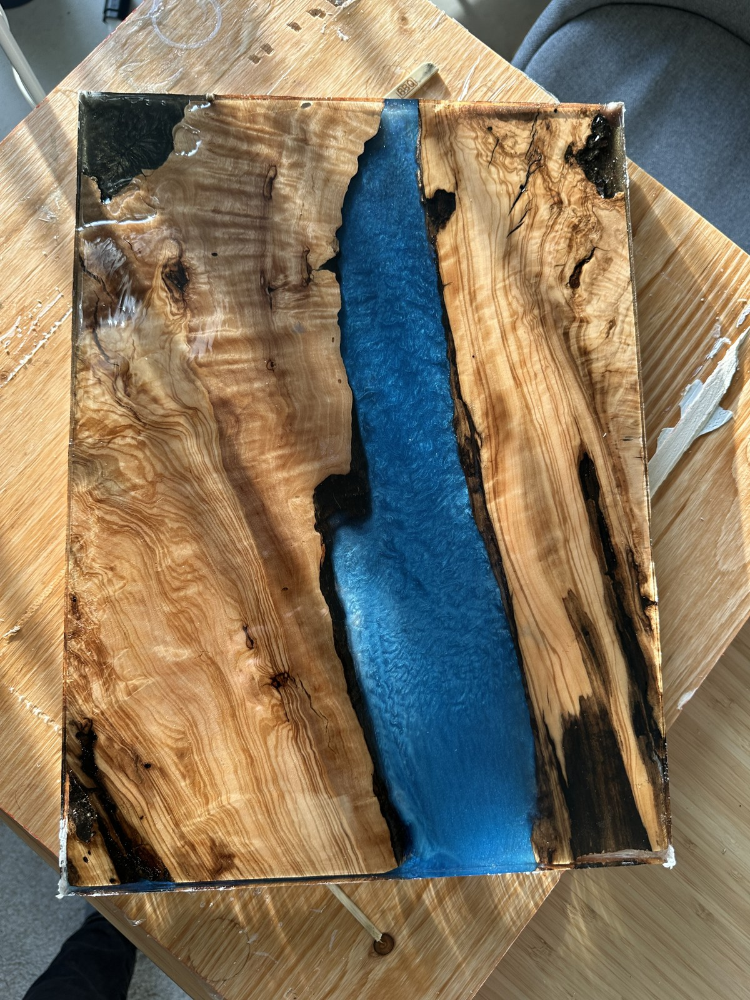
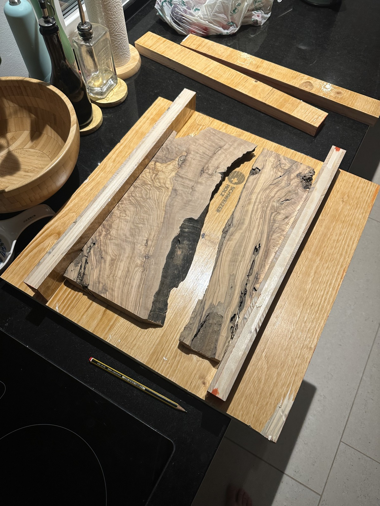
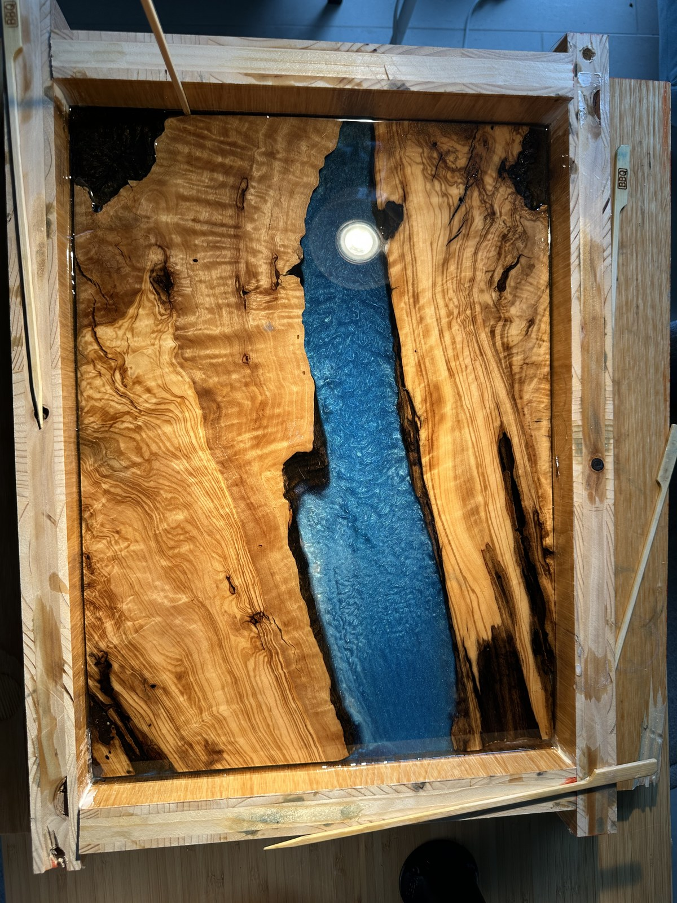
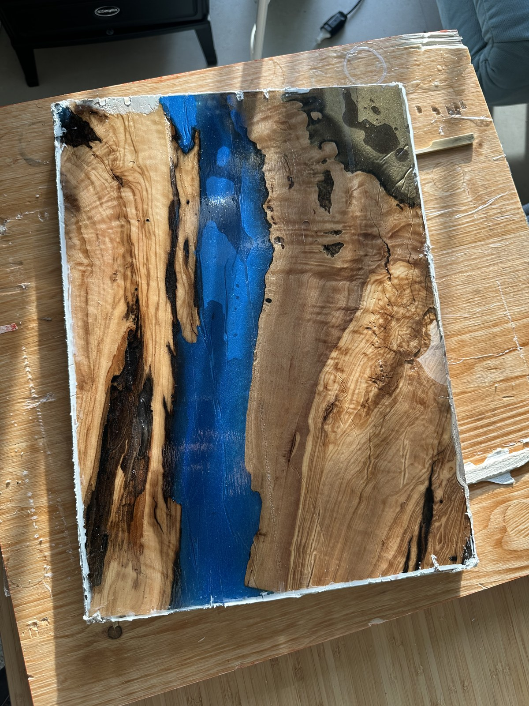
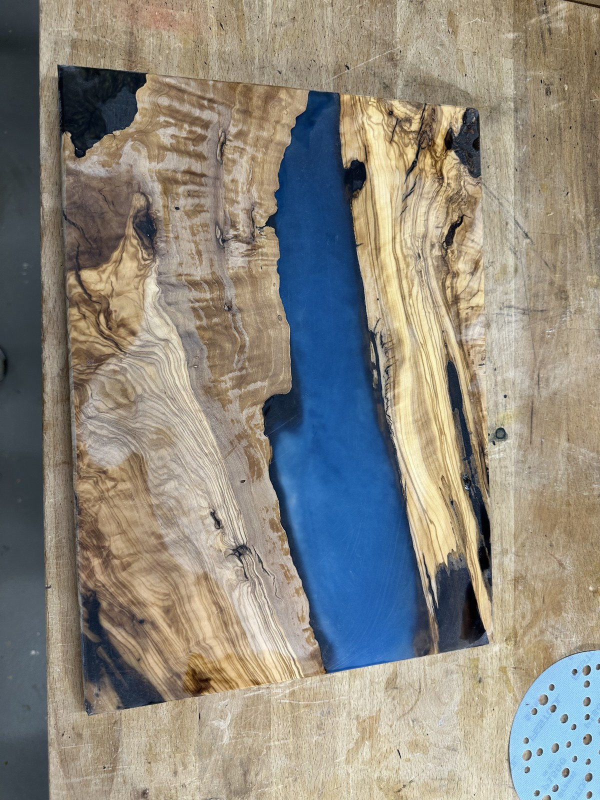
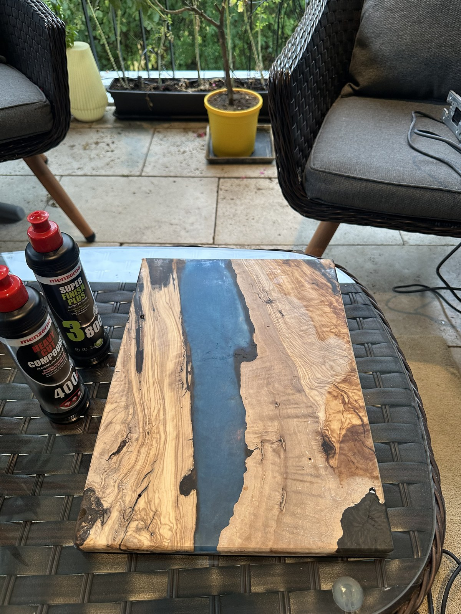

Progetto 04 • Manifattura composita e dinamica dei fluidi
Tagliere "river board" in legno d'olivo e resina epossidica mica blu
Un tagliere ibrido da 40 cm × 30 cm × 2,5 cm che unisce tavole fiammate di olivo secolare mediterraneo a un fiume in resina epossidica con polvere di mica blu a più livelli. Colato in cinque fasi distinte all'interno di una cassaforma in nobilitato su misura, levigato a umido fino a grana 1500, lucidato a specchio con paste abrasive e protetto con burro per legno svizzero (Holz-Butter).
Specifiche e parametri di progetto
Dimensioni finali
40,0 cm lunghezza × 30,0 cm larghezza × 2,5 cm spessore
Specie legnosa
Legno d'olivo mediterraneo (Olea europaea) con bordi naturali organici (live edge)
Matrice di resina
Resina epossidica professionale per colate ad alto spessore arricchita con polvere di mica perlata blu metallizzato
Architettura di colata
Oltre 5 colate distinte: base blu opaca e densa con vortici, che sfuma verso strati superiori cristallini a trasparenza ottica per un effetto di profondità oceanica 3D
Ingegnerizzazione dello stampo
Cassaforma antiaderente in legno realizzata su misura in pannelli nobilitati melamminici con sigillatura in silicone
Piano di levigatura
Levigatura roto-orbitale progressiva a secco e a umido: grana 80 → 120 → 240 → 400 → 800 → 1500
Protocollo di lucidatura
Due passaggi con paste abrasive a taglio grosso e medio seguiti da polish microfine ad altissima brillantezza
Nutrimento del legno
Holz-Butter naturale svizzero (cera d'api biologica e oli vegetali puri)
Origine della bottega
Zurigo, Svizzera
Progressione abrasiva e rivelazione della lucidatura
Spianatura grezza vs lucidatura a grana 1500 e Holz-Butter
Trascina il cursore centrale per osservare come la resina opaca e graffiata dopo la piallatura venga trasformata, grazie alle paste microabrasive e alla cera d'api, in una limpida finestra oceanica tridimensionale.

Spianato grezzo (Piano)Lucidato grana 1500 + Holz-Butter
Il percorso in bottega
Il diario completo di lavorazione
Una guida in dieci fotografie tra costruzione della cassaforma, colata multistrato della resina, finitura con microabrasivi e lucidatura alla cera d'api.
Passo 01Selezione del bordo naturale
Selezione e preparazione delle tavole d'olivo mediterraneo
Il legno d'olivo (Olea europaea) è celebre per le sue venature selvagge e contorte, le marcate linee di accrescimento scure e la densa struttura cellulare. Sono state selezionate due tavole speculari (a libro) caratterizzate da splendidi bordi naturali. La corteccia esterna tenera è stata rimossa con spazzola d'acciaio e coltello a petto fino a raggiungere il cambio compatto e ondulato del bordo vivo, garantendo un aggancio meccanico e chimico permanente con la resina epossidica.

Tavole d'olivo speculari orientate con i bordi vivi verso l'interno per formare l'alveo del fiume.Clicca per ingrandire
Passo 02Ingegnerizzazione della cassaforma
La cassaforma antiaderente in nobilitato melamminico
La resina epossidica aderisce tenacemente a quasi ogni materiale, ad eccezione delle superfici plastiche lisce e della melammina. È stata costruita una cassaforma in legno su misura impiegando pannelli di particelle nobilitati bianchi, dimensionata esattamente a 40 cm × 30 cm interni. Tutte le giunzioni interne sono state sigillate con silicone al 100% per impedire qualsiasi perdita di resina. Fondamentale è stata l'applicazione di traverse e cale di ritenuta sopra le tavole d'olivo, per impedire che galleggiassero durante la colata della resina liquida.
La cassaforma in nobilitato: pareti antiaderenti e cale di tenuta per scongiurare il galleggiamento del legno.Clicca per ingrandire
Sigillatura del bordo vivo per prevenire le bolle d'aria
Il legno d'olivo presenta microfessure e sacche d'aria vascolari. Prima di procedere con la colata profonda del fiume, i bordi grezzi sono stati presigillati applicando a pennello un sottile strato di resina trasparente. Questa pellicola chiude i pori del legno ed evita che rilasci bolle d'aria gassosa nella resina liquida durante l'indurimento.
Passo 03Colata stratificata
La colata 3D in 5 strati: dalla mica blu alla trasparenza cristallina
Colare un fiume di resina ad alto spessore in un'unica soluzione comporterebbe un grave rischio di fuga termica esotermica (ebollizione incontrollata, fumo e cavillature). Inoltre, una singola colata non permette di creare una profondità ottica realistica.
Sono state effettuate oltre cinque colate distinte distribuite nell'arco di diversi giorni:
Colate 1 e 2 (Base profonda): Caricate con un'alta concentrazione di polvere di mica blu metallizzato. Mescolate a mano nel momento in cui la resina iniziava a gelificare, per imprimere vortici dinamici e riflessi cangianti che evocano le correnti oceaniche.
Colata 3 (Transizione intermedia): Leggermente sfumata con pigmento blu traslucido, per raccordare con armonia il fondo scuro del fiume con la superficie.
Colate 4 e 5 (Copertura superiore): Resina epossidica trasparente al 100% con purezza ottica. Funge da lente d'ingrandimento sopra il letto di mica blu, generando un autentico effetto 3D in cui la luce penetra fino al fondo del fiume.

Prima fase di colata: pigmenti metallici di mica blu profondo che creano vortici lungo l'alveo centrale.Click to enlarge
Dettaglio della sospensione dei pigmenti e controllo della reazione esotermica tra le diverse fasi di colata.Click to enlarge
Passo 04Sformatura e spianatura
Sformatura e calibratura della tavola composita
Dopo 72 ore di completa polimerizzazione, le viti della cassaforma sono state rimosse e le sponde staccate con colpi leggeri di mazzuolo antirimbalzo. Il blocco grezzo si è presentato solido, con lievi colmi di resina in eccesso. Tramite una dima per spianatura e una levigatrice a nastro largo, entrambe le facce sono state portate a perfetta planarità allo spessore finito di esattamente 2,5 cm, uniformando la linea di contatto tra legno e resina.

Tavola appena sformata: il distacco dalla melammina è avvenuto perfettamente senza strappi nel legno.Click to enlarge
Dopo la spianatura iniziale: la resina appare opaca a causa delle abrasioni grossolane, in attesa della raffinazione con micrograne.Click to enlarge
Passo 05Progressione abrasiva
Dalla grana 80 alla preparazione per la lucidatura a grana 1500
La linea di demarcazione tra un'opacità dilettantistica e una trasparenza vitrea professionale risiede nella pazienza e nel rigore con cui si susseguono le grane abrasive. La levigatura è stata condotta sistematicamente attraverso sei fasi distinte:
80 → 120 → 240 → 400 → 800 → 1500.
A partire dalla grana 400, si è passati alla carteggiatura a umido con acqua nebulizzata e una goccia di sapone neutro, così da lubrificare l'abrasivo, impedire il surriscaldamento della resina (che impasterebbe la carta abrasiva) e cancellare progressivamente ogni micrograffio fino a rendere l'epossidica liscia come marmo levigato.
Fase di levigatura a umido a grana 1500: la resina passa da un velo opaco a una lucentezza semilucida.Click to enlarge
Passo 06Chiarezza ottica e Holz-Butter
Paste abrasive in due fasi, polish brillante e Holz-Butter
Per ottenere la limpidezza del cristallo liquido, il tagliere è stato fissato al banco per la lucidatura meccanica rotativa. In primo luogo, una pasta abrasiva mordente (compound) applicata su tampone in spugna ha eliminato le residue microabrasioni della grana 1500. In secondo luogo, una pasta intermedia ha conferito un'elevata riflettività. Infine, è stato applicato un polish microfine ad altissima brillantezza con cuffia morbida in microfibra, fino a rendere la resina perfettamente trasparente dal punto di vista ottico.
Raggiunta la lucidatura a specchio dell'epossidica, il legno d'olivo è stato trattato con il burro per legno naturale svizzero Holz-Butter. La lucidatura a mano con questo balsamo alla cera d'api biologica ha nutrito in profondità le venature dell'olivo, facendo risaltare il durame dorato e le fiammature scure a fianco dell'elettrizzante fiume blu.

Trattamento con paste abrasive: il compound in due fasi esalta riflessi specchiati nella resina.Click to enlarge

L'illusione 3D all'opera: gli strati superiori trasparenti rivelano i gorghi luccicanti di mica blu sottostanti.Click to enlarge
Il capolavoro compiuto: il caldo legno d'olivo mediterraneo incornicia un profondo fiume 3D in mica blu.Click to enlarge
Archivio di bottega
Galleria fotografica completa (10 scatti)
Clicca su qualsiasi immagine per esaminare i dettagli ad alta risoluzione nel visualizzatore.